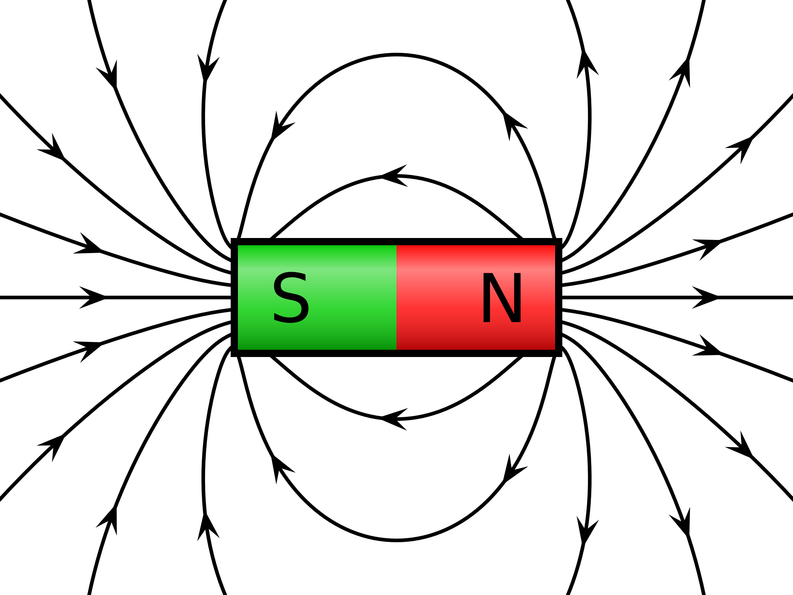

Introduction to Magnetism

"Physics Is
Imagination In A Straight Jacket"
John Moffat

- As we will see shortly, Electricity and Magnetism are
different aspects of the same basic physical phenomenon - hence
the description Electromagnetism.
- However, initially it is convenient to treat magnetism in a
separate, but similar, manner to electricity. In other
words we will define, magnetic forces, magnetic fields and
magnetic dipoles exactly as we did the electric variables.
- After this initial description we will develop the
relationship between magnetism and electricity through Faraday's
Law of Induction and the Displacement Current, leading finally
to a complete description of (classical) electromagnetism in the
form of Maxwell's
equations.
- So our starting point in describing magnetism will be the
assumption of the existence of a magnetic field, B, the
origin of which will be described later.
- Exactly as for the electric field E,
we will assume that the B field can be represented by
field lines where,
- the tangent to a field line gives the direction of B
at that point and
- the number of field lines per unit cross sectional area is
proportional to the strength of B.
 It is important to realize immediately that unlike
electric field lines, magnetic field lines DO NOT
represent the direction of the force acting on a charged
particle.
It is important to realize immediately that unlike
electric field lines, magnetic field lines DO NOT
represent the direction of the force acting on a charged
particle.
The magnetic phenomenon most
familiar to most people is that of permanent magnetism -
refrigerator magnets etc. As it happens, permanent magnetism
is not a simple topic to explain. In fact a complete
description requires a detailed knowledge of the quantum behavior
of materials. For this reason we will barely mention
permanent magnets in this course.
Q: What is the name of the first electricity detective?
A: Sherlock Ohms
Dr. C. L. Davis
Physics Department
University of Louisville
email: c.l.davis@louisville.edu